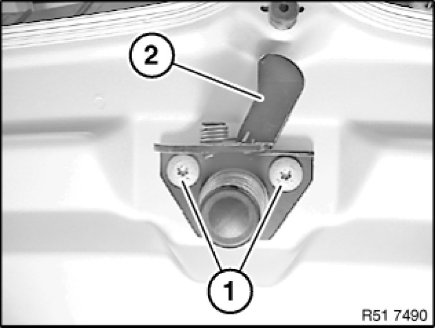

Removing and Installing/Replacing Arrester Hook on Engine Hood
51 23 160 - Removing and installing/replacing arrester hook on engine hood

Raise bonnet/hood lid.
Release screws (1) and remove arrester hook (2).
Tightening torque 51 23 1AZ 51 23 Hood/Bonnet Locks.